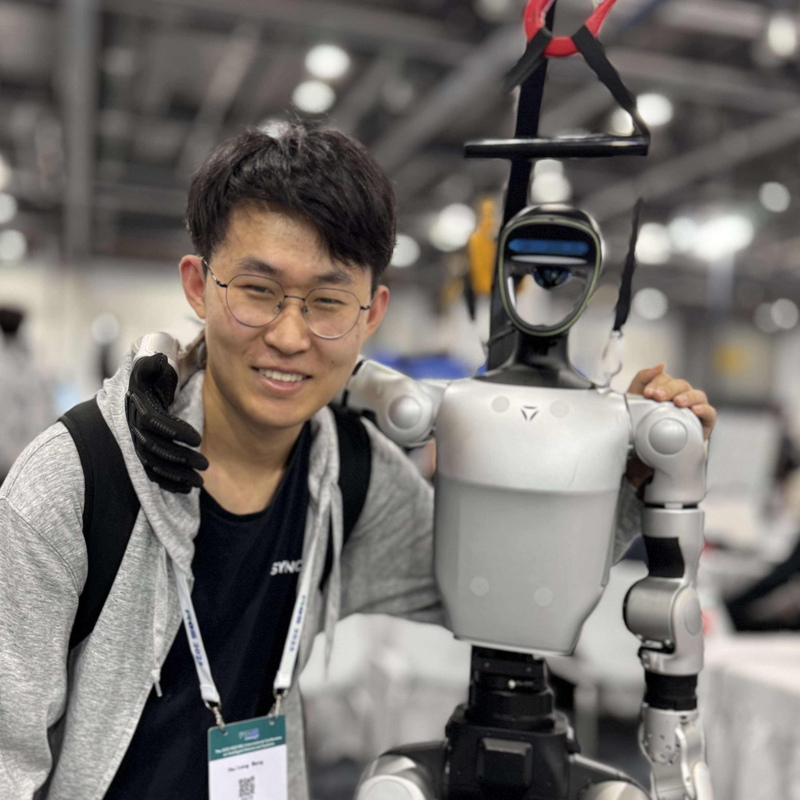
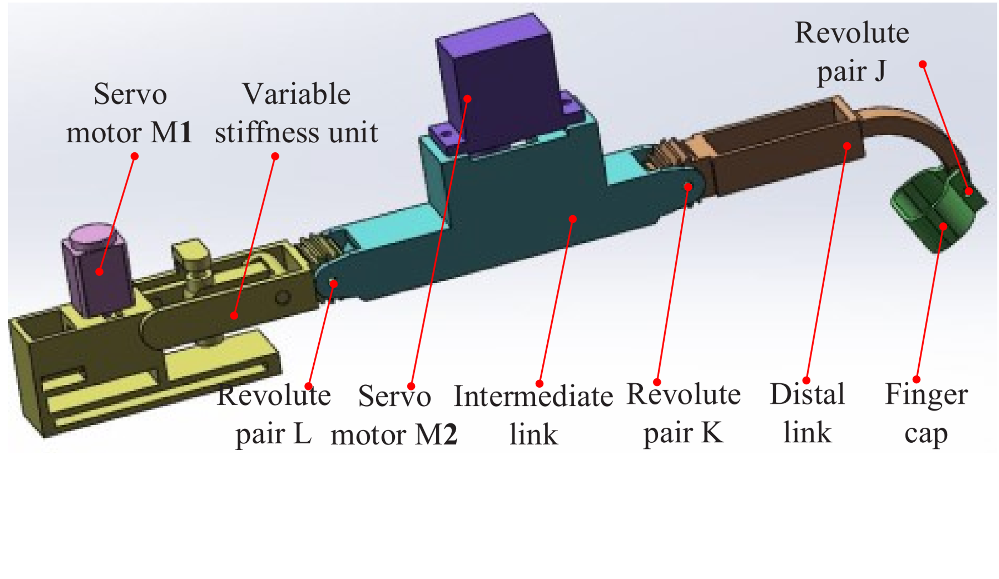
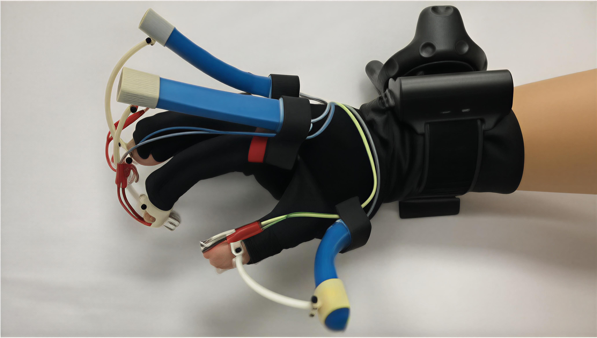

|
Haitong Wang (王海同) I'm a PhD student at the University of Toronto, advised by Prof. Goldie Nejat. Previously, I completed my bachelor's degree at Beihang University. I am interested in robot learning, with a focus on enabling generalizable navigation and manipulation for mobile robots. |
 |
{kind=link}
ResearchHighlighted are led or co-led by me. |
|
|
SplatSearch: Instance Image Goal Navigation for Mobile Robots using 3D Gaussian Splatting and Diffusion Models
Siddarth Narasimhan, Matthew Lisondra, Haitong Wang, Goldie Nejat Preprint, 2025 website / arXiv / video / code |
|
|
X-Nav: Learning End-to-End Cross-Embodiment Navigation for Mobile Robots
Haitong Wang, Aaron Hao Tan, Angus Fung, Goldie Nejat Robotics and Automation Letters (RA-L), 2025 International Conference on Robotics and Automation (ICRA), 2026 website / arXiv / video |
|
|
Mobile Robot Navigation Using Hand-Drawn Maps: A Vision Language Model Approach
Aaron Hao Tan, Angus Fung, Haitong Wang, Goldie Nejat Robotics and Automation Letters (RA-L), 2025 International Conference on Robotics and Automation (ICRA), 2026 arXiv / video |
|
|
MLLM-Search: A Zero-Shot Approach to Finding People using Multimodel Large Language Models
Angus Fung, Aaron Hao Tan, Haitong Wang, Beno Benhabib, Goldie Nejat Robotics, 2025 arXiv / video |
|
|
Find Everything: A General Vision Language Model Approach to Multi-Object Search
Daniel Choi*, Angus Fung*, Haitong Wang*, Aaron Hao Tan* International Conference on Intelligent Robots and Systems (IROS), 2025 CoRL workshop on Language and Robot Learning, 2024 website / arXiv / video |
|
|
NavFormer: A Transformer Architecture for Robot Target-Driven Navigation in Unknown and Dynamic Environments
Haitong Wang, Aaron Hao Tan, Goldie Nejat Robotics and Automation Letters (RA-L), 2024 International Conference on Robotics and Automation (ICRA), 2025 arXiv / video |

|
Five-Fingered Passive Force Feedback Glove Using a Variable Ratio Lever Mechanism
Yuan Guo, Xiuping Yang, Haitong Wang, Yuru Zhang, Weiliang Xu, Dangxiao Wang Actuators, 2021 paper |
|

|
Achieving High Stiffness Range of Force Feedback Gloves using Variable Stiffness Mechanism
Yuan Guo, Dangxiao Wang, Ziqi Wang, Xiuping Yang, Haitong Wang, Yuru Zhang, Weiliang Xu IEEE World Haptics Conference (WHC), 2019 paper |
Projects |
|
|
8-DOF Quadruped Robot, ABU Robocon 2019
We built a 8-DOF quadruped robot from scratch for the Robocon 2019 competition, and won the national second place. Developed with my teammates from the Beihang Robotics Team. |
|

|
Soft Haptic Glove with Force and Thermal Feedback, 2019
Developed the thermal control system for a soft haptic glove with force and thermal feedback, work done with Ziqi Wang, and Prof. Dangxiao Wang. |
Teaching |
| Teaching Assistant for MIE443 Mechatronics Systems: Design and Integration, 2024 Winter, 2025 Winter, 2025 Fall |
Reviewer |
| Reviewer for RA-L, IROS, CoRL. |
|
Website Template from Jon Barron. |
|
Visitor map
|